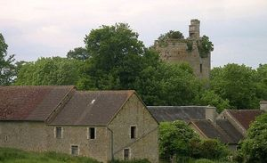
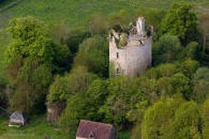
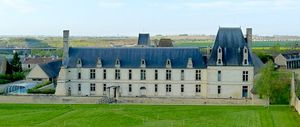
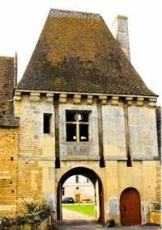

Recensement Jean-Claude Truffet
| Département | 14 — Calvados |
| Canton | Thury-Harcourt |
| Commune | Thury-Harcourt |
| Type d'édifice | Château |
| Période d'origine | XIII-XVIII |
| Coordonnées GPS | 48° 58' 18" Nord, 0° 20' 35" Ouest, Fresney grav 3-4 |




A quelques K.M. à l'ouest FRESNEY le PUCEUX édifice construit pour Pierre d'Harcourt entre 1578 et 1584. Armes de Charles de Fiesque deuxième époux de Gilonne d'Harcourt, en 1643, puis Fresney passa à la Famille de Guerchy jusqu'au XIXe siècle. TOURNEBU, la propriété appartenant jadis à l'illustre famille de Tournebu, la paroisse est le berceau de cette famille et le siège de sa principale baronnie. L'ensemble des constructions s'est effectué entre le XIIe et le XVIIIe siècle. Le donjon est le seul vestige dun château plus ancien détruit après la Révolution. Construit au XIIIe siècle, puis remanié, il est coiffé d'un toit au XVIe siècle. Il est directement construit sur une motte de terre féodale plus ancienne. Au début du XVIIe siècle, la motte est transformée en fortification avec l'ajout de quatre bastions selon un plan en étoile. Des souterrains sont créés pour relier les bastions à la tour. La cave creusée sous la tour et les fossés datent de cette époque. La basse cour en U et ses dépendances sont réparties sur une surface de presque 3 hectares de pâture et de jardin. Elle abrite deux logis d'habitation et trois granges sur deux niveaux, construites entre 1828 et 1890. Éléments protégés MH : les restes du château de Tournebu : inscription par arrêté du 21 juin 1927.
FRESNEY, il offrait un grand carré de bâtiments, flanqué de hauts pavillons, dont la porte d'entrée, crénelée et garnie de rainures, recevait un pont levis qui s'abaissait sur les douves. Entre les pavillons, de grandes galeries, dont la principale était ornée des écussons de tous les seigneurs, celui de Charles Léon de Fiesque, prince et vicaire du Saint Empire, portait un aigle éployée. Le colombier figurant sur cadastre 1808 fut détruit. Éléments protégés MH : le château en totalité : classement par arrêté du 9 octobre 1930. TOURNEBU Sa construction date du XIIIe siècle. Il appartenait à la famille de Tournebu qui en avait fait sa résidence familiale. Construit par les premiers barons de Tournebu au XIIIe siècle, il passera dans les mains de plusieurs familles avant d'être racheté, à nouveau, par Pierre III de Tournebu, marquis de Livet aux comtes du Rhin. En 1806, le château est légué par Marie-Pierre de Tournebu (née en 1725 et décédée en 1810 sans postérité de son mariage en premières noces avec Pierre François Jean-Baptiste de Bernières seigneur de Mondrainville, puis, en secondes noces, avec Louis-François-Pierre Louvel de Janville) à René-Jacques de Foucault (1717-1799) qui descendait en ligne féminine de la famille de Tournebu. Le donjon et les dépendances sont en très mauvais état. La Famille de Foucault a conservé le château jusqu'en 2012.
Famille de Tournebu
"
Château de Tournebu GPS : 48° 58' 18" Nord, 0° 20' 35" Ouest, Fresney grav 3-4